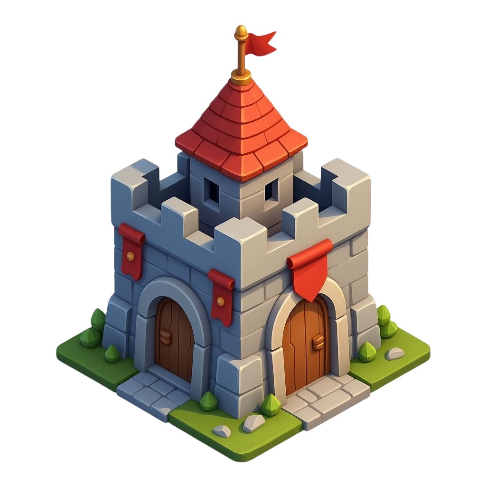
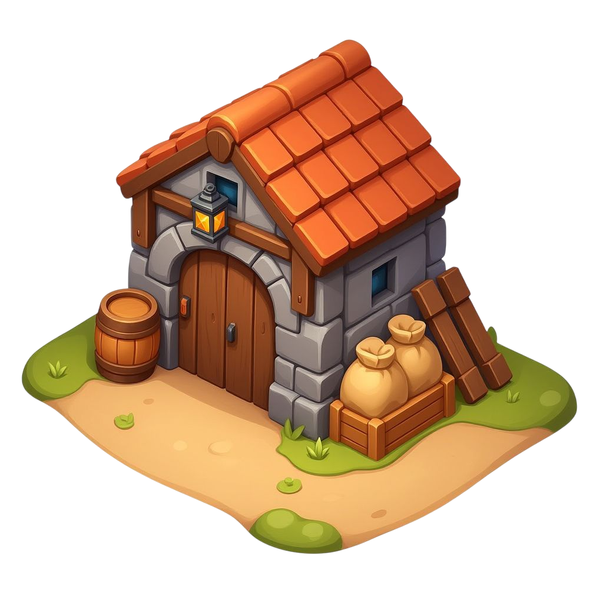
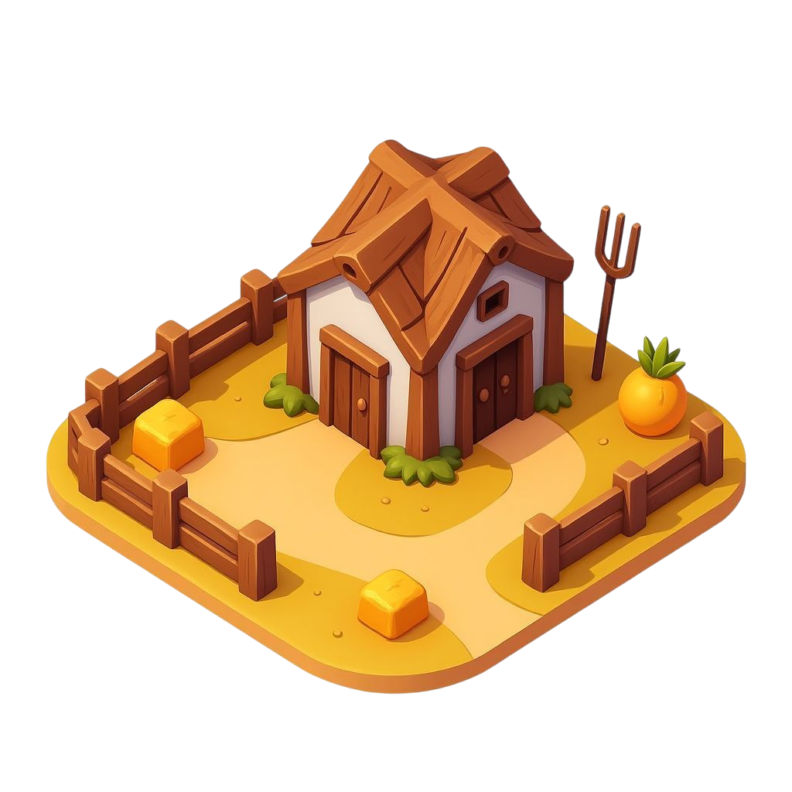

<!doctype html>
<html lang="fr">
<head>
<meta charset="utf-8"/>
<meta name="viewport" content="width=device-width,initial-scale=1"/>
<title>Choix du Style — Village · Carrousel (Production) · BftC</title>
<link rel="stylesheet" href="colors_and_type.css"/>
<style>
  html, body { margin: 0; background: #f0eee9; color: #3d2f1f; font-family: var(--bftc-font-body); }
</style>
</head>
<body>
  <div id="root"></div>
  <script src="https://unpkg.com/react@18.3.1/umd/react.development.js" integrity="sha384-hD6/rw4ppMLGNu3tX5cjIb+uRZ7UkRJ6BPkLpg4hAu/6onKUg4lLsHAs9EBPT82L" crossorigin="anonymous"></script>
  <script src="https://unpkg.com/react-dom@18.3.1/umd/react-dom.development.js" integrity="sha384-u6aeetuaXnQ38mYT8rp6sbXaQe3NL9t+IBXmnYxwkUI2Hw4bsp2Wvmx4yRQF1uAm" crossorigin="anonymous"></script>
  <script src="https://unpkg.com/@babel/standalone@7.29.0/babel.min.js" integrity="sha384-m08KidiNqLdpJqLq95G/LEi8Qvjl/xUYll3QILypMoQ65QorJ9Lvtp2RXYGBFj1y" crossorigin="anonymous"></script>
  <script type="text/babel" src="design-canvas.jsx"></script>
  <script type="text/babel" src="bftc-primitives.jsx"></script>
  <script type="text/babel" src="village-style-modal-carousel.jsx"></script>
  <script type="text/babel">
    const { useState } = React;

    // Mock village background — what's behind the modal in the phone frame.
    function VillageBg() {
      return (
        <div style={{ position: 'absolute', inset: 0, background: 'linear-gradient(180deg,#7c9756 0%,#a8b977 28%,#cdbf8e 60%,#b89968 100%)' }}>
          <div style={{
            position: 'absolute', left: 0, right: 0, top: 0, height: 62,
            background: 'linear-gradient(to bottom, rgba(60,38,25,.94), rgba(78,56,34,.94))',
            borderBottom: '2px solid #8b7355',
            display: 'flex', alignItems: 'center', padding: '8px 10px', gap: 8,
          }}>
            <div style={{ width: 40, height: 40, borderRadius: '50%', background: 'linear-gradient(to bottom,#8b6f47,#6d5838)', border: '2px solid #5d4a32' }}/>
            <div style={{ flex: 1, display: 'flex', flexDirection: 'column', gap: 5 }}>
              <div style={{ height: 14, width: 100, background: 'rgba(255,255,255,.18)', borderRadius: 4 }}/>
              <div style={{ height: 22, background: 'rgba(0,0,0,.32)', borderRadius: 6 }}/>
            </div>
          </div>
          
          
          
          <div style={{
            position: 'absolute', left: 0, right: 0, bottom: 0, height: 64,
            background: 'linear-gradient(to top, rgba(60,38,25,.95), rgba(78,56,34,.9))',
            borderTop: '2px solid #8b7355',
          }}/>
        </div>
      );
    }

    function PhoneFrame({ children }) {
      return (
        <div style={{
          position: 'relative', width: 360, height: 720, borderRadius: 36, overflow: 'hidden',
          background: '#1a1a2e', border: '8px solid #0c0c1a',
          boxShadow: '0 30px 60px rgba(0,0,0,.6), inset 0 0 0 2px #2a2a45',
        }}>
          <VillageBg/>
          {children}
        </div>
      );
    }

    function ClosedState() {
      const [open, setOpen] = useState(false);
      return (
        <PhoneFrame>
          {/* Trigger pinned bottom-center, where a building action would surface */}
          <div style={{
            position: 'absolute', left: 0, right: 0, bottom: 86,
            display: 'flex', justifyContent: 'center',
          }}>
            <VillageStyleTrigger currentStyleId="balanced" onClick={() => setOpen(true)} />
          </div>
          <VillageStyleModal
            open={open}
            onClose={() => setOpen(false)}
            onAdopt={(id) => { console.log('adopt', id); setOpen(false); }}
            currentStyleId="balanced"
            castleLevel={5}
          />
        </PhoneFrame>
      );
    }

    function OpenFortress() {
      return (
        <PhoneFrame>
          <VillageStyleModal
            open={true}
            onClose={() => {}}
            onAdopt={() => {}}
            currentStyleId="balanced"
            initialStyleId="fortress"
            castleLevel={5}
          />
        </PhoneFrame>
      );
    }

    function OpenRaidersUnaffordable() {
      return (
        <PhoneFrame>
          <VillageStyleModal
            open={true}
            onClose={() => {}}
            onAdopt={() => {}}
            currentStyleId="balanced"
            initialStyleId="raiders"
            castleLevel={5}
            stock={{ wood: 1820, stone: 940, iron: 180, crowns: 60 }}
          />
        </PhoneFrame>
      );
    }

    function OpenEconomicHighLevel() {
      return (
        <PhoneFrame>
          <VillageStyleModal
            open={true}
            onClose={() => {}}
            onAdopt={() => {}}
            currentStyleId="balanced"
            initialStyleId="economic"
            castleLevel={8}
            stock={{ wood: 8500, stone: 3200, iron: 1500, crowns: 142 }}
          />
        </PhoneFrame>
      );
    }

    function OpenBalancedCurrent() {
      return (
        <PhoneFrame>
          <VillageStyleModal
            open={true}
            onClose={() => {}}
            onAdopt={() => {}}
            currentStyleId="balanced"
            initialStyleId="balanced"
            castleLevel={5}
          />
        </PhoneFrame>
      );
    }

    function App() {
      return (
        <DesignCanvas
          title="Choix du Style — Carrousel (production)"
          subtitle="Variant C industrialisé. Composants atomiques extraits dans bftc-primitives.jsx (ModalShell, ModalOverlay, PixelBtn, CostChip, CostStrip, StatLine, Pill, Glyph). Carrousel + trigger dans village-style-modal-carousel.jsx. Flèches ←/→, Esc ferme."
        >
          <DCSection
            id="states"
            title="États de la modal"
            subtitle="Quatre voies, cinq scénarios. Tous les artboards sont interactifs : clique le trigger, navigue avec ←/→, ferme avec Esc."
          >
            <DCArtboard id="closed" label="Fermée + trigger" width={360} height={720}>
              <ClosedState/>
            </DCArtboard>
            <DCArtboard id="fortress" label="Forteresse · payable" width={360} height={720}>
              <OpenFortress/>
            </DCArtboard>
            <DCArtboard id="raiders" label="Raiders · ressources insuff." width={360} height={720}>
              <OpenRaidersUnaffordable/>
            </DCArtboard>
            <DCArtboard id="economic" label="Économique · Château 8 (×2.44)" width={360} height={720}>
              <OpenEconomicHighLevel/>
            </DCArtboard>
            <DCArtboard id="current" label="Équilibré · déjà actuel" width={360} height={720}>
              <OpenBalancedCurrent/>
            </DCArtboard>
          </DCSection>
        </DesignCanvas>
      );
    }
    ReactDOM.createRoot(document.getElementById("root")).render(<App/>);
  </script>
</body>
</html>
